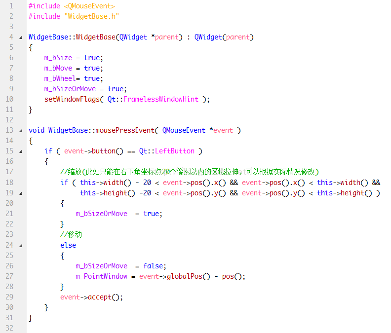

原文出处:本文由博客园博主江南烟雨梦提供。
原文连接:https://www.cnblogs.com/isky0824/p/12096415.html
原文连接:https://www.cnblogs.com/isky0824/p/12096415.html
主要是处理窗口上鼠标的几个事件，具体代码请看下面的截图，
完整代码的下载链接在此：http://download.csdn.net/detail/beyond0824/9657110，
本示例代码中，只能拉伸窗口右下角20px以内的区域，读者可参考代码以实现其他位置的拉伸。
